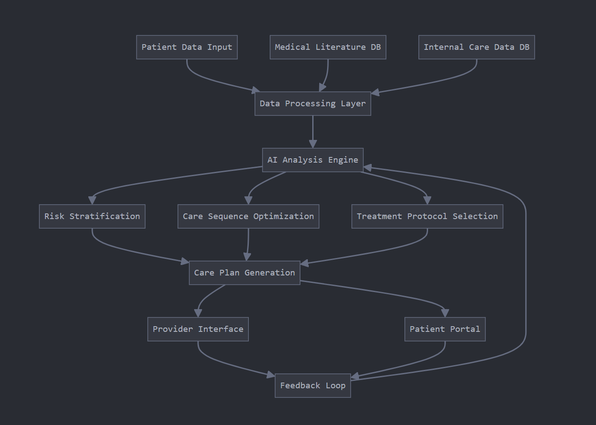

Our AI solution integrates patient data, medical literature, and internal care outcomes to generate optimized wound care plans that minimize hospital readmissions.
Our AI solution integrates patient data, medical literature, and internal care outcomes to generate optimized wound care plans that minimize hospital readmissions.
Analyzes thousands of similar cases to determine optimal intervention ordering, aligning with the latest literature while adapting to your organization's success patterns.
Identifies high-risk patients needing more intensive monitoring, triggers early interventions, and optimizes resources for preventive care.
Right-sizes care team composition based on wound complexity and patient factors with dynamic adjustment as healing progresses.
Data integration and model development (3 months)
Provider interface and pilot testing (2 months)
Full deployment and continuous improvement (ongoing)